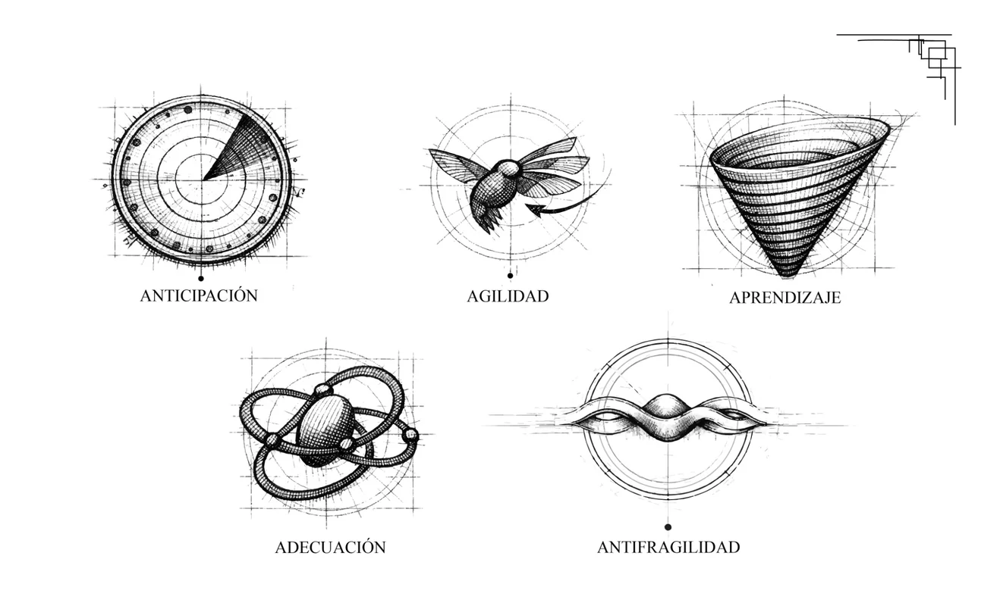
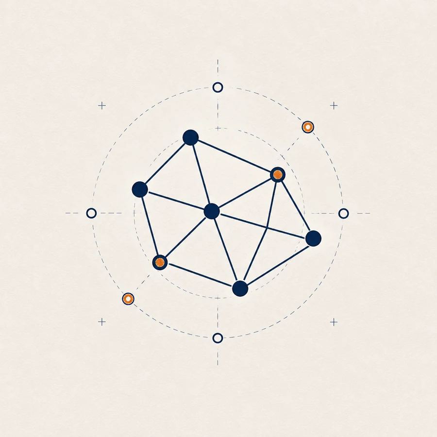
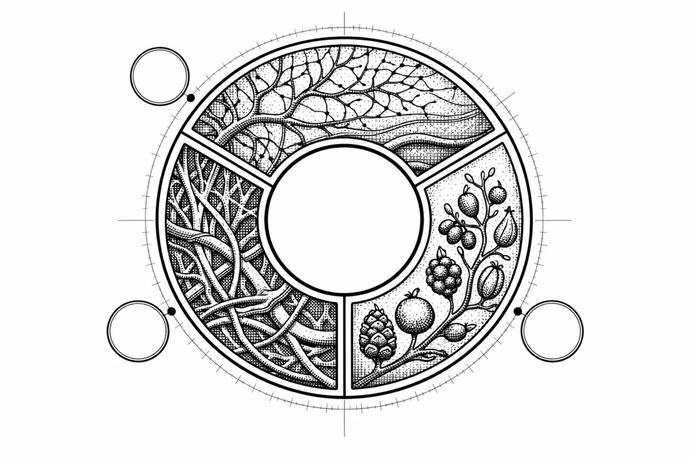
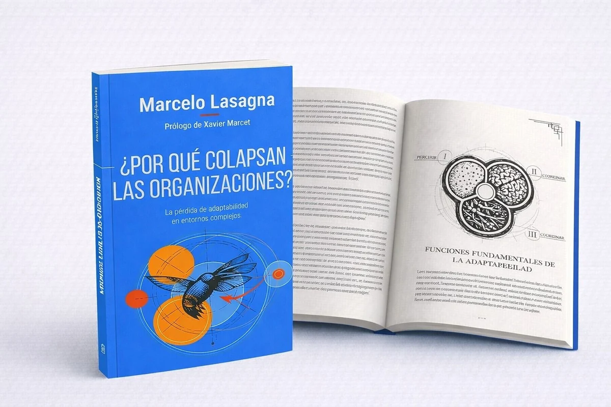

Muchas organizaciones no colapsan por falta de estrategia.
Colapsan porque su capacidad de respuesta llega después que el cambio.
Detectan demasiado tarde los cambios
Las señales ya están en el entorno, pero la organización todavía lee la realidad desde indicadores del ciclo anterior.
Aprenden demasiado lento
El conocimiento existe, pero no logra convertirse a tiempo en decisión, coordinación ni transformación efectiva.
Coordinan mal la complejidad
Áreas, equipos y liderazgos operan como piezas aisladas frente a problemas interdependientes.
Siguen diseñadas para un mundo que ya no existe
Su arquitectura mental, organizacional y cultural responde a una estabilidad que dejó de ser el punto de partida.
Las organizaciones no son máquinas.
Son sistemas vivos expuestos a incertidumbre, interdependencia y transformación permanente.
Este libro propone abandonar la lógica de estabilidad y comprender cómo cultivar capacidades adaptativas para sostener vigencia en entornos complejos.
Mecánica
Control, repetición, estabilidad y eficiencia local.
Sistema complejo adaptativo
Lectura, aprendizaje, coordinación y evolución.

Un mapa para sostener vigencia en entornos complejos

Anticipación
Leer señales débiles antes de que se vuelvan crisis.
Agilidad
Moverse con inteligencia, dirección y propósito.
Aprendizaje
Convertir conocimiento en ventaja evolutiva sostenible.

Adecuación
Alinear estructuras, procesos y cultura con el entorno real.
Antifragilidad
Fortalecerse en la presión y aprender del shock adaptativo.
Seis entradas para leer el colapso antes de que sea evidente
Complejidad, adaptabilidad e innovación tratadas como capacidades vivas, no como consignas de gestión.
Complejidad y colapso organizacional
Adaptabilidad como ventaja competitiva
El error de las organizaciones mecánicas
Inteligencia adaptativa
Innovación en contextos inciertos

Casos reales en Europa y América Latina
Conversaciones para leer lo que ya cambió.
Encuentros sobre complejidad, adaptabilidad y organizaciones.
Casa del Libro
2 de julio · 19:00
Conversación sobre complejidad, adaptabilidad y organizaciones.
Aforo por confirmar.
Reservar plazaBarcelona
Fecha por confirmar
Encuentro con comunidad, organizaciones y medios especializados.
Recibir avisoSantiago
Fecha por confirmar
Presentación orientada a empresas, instituciones y equipos directivos.
Recibir aviso¿Tu organización está entrando en obsolescencia adaptativa?
Haz el test rápido y descubre tu nivel de riesgo.
El resultado puede abrir una ruta hacia diagnóstico, talleres, comunidad, newsletter o IAO.
Marcelo Lasagna
PhD (c) en Ciencias Políticas.
Fundador de Protea Becoming Adaptive y cofundador de Lead To Change Chile.
Desde hace más de 30 años acompaña procesos de transformación e innovación en organizaciones públicas y privadas de Europa y América Latina.
Especialista en sistemas complejos adaptativos aplicados a organizaciones.
LinkedIn“La adaptabilidad no es una opción. Es la única ventaja sostenible.”
Voces breves para reforzar autoridad.
Seleccionar tres citas del libro: empresarial, académica e institucional.
Cita breve por seleccionar del libro.
Batet
Cita breve por seleccionar del libro.
Jordi Marín
Cita breve por seleccionar del libro.
Oscar
El efecto Colibrí
Reflexiones sobre complejidad, adaptabilidad e innovación en tiempos inciertos.
Comunidad, conferencias, labs e IAO como continuidad natural del libro.